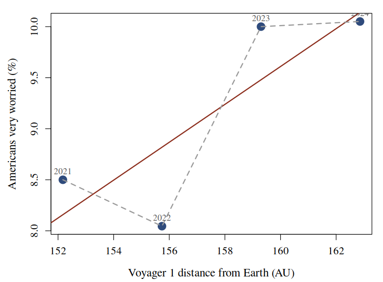

Every additional astronomical unit between Earth and Voyager 1 is associated with a 0.19 percentage point rise in the share of American workers who are very worried that their job will be automated (r = 0.83).
Public anxiety about automation is normally explained by what is happening on Earth: labour market composition, the news cycle, the release schedule of the technology itself. These accounts share an assumption nobody has tested, which is that the relevant distances are terrestrial ones.
Voyager 1 is the most distant human artefact. It recedes at a near-constant 3.56 AU per year, entirely unaffected by anything happening in the American labour market, which makes it an unusually clean exogenous series: whatever it is measuring, it is not measuring the economy.
We ask whether it predicts how worried Americans are about being replaced.
JPL Horizons (COMMAND='-31', geocentric
range, annual steps) - the distance from Earth to Voyager 1, queried
live in analysis.Rmd and pinned to
voyager1_distance.csv.
YouGov, via Our World in Data - "How worried, if at all, are you that your type of work could be automated within your lifetime?" We take All working adults and average the survey waves within each year.
The two series overlap in 4 years.
Both series were reduced to one observation per calendar year and joined on the year. No observation was excluded and no variable was transformed.
We fit two specifications by ordinary least squares: a linear model in distance, and a cubic polynomial in distance.

Figure 1. Automation worry against the distance to Voyager 1. Labels are years. The solid line is the linear fit; the dashed line is the cubic.
| Specification | R² | Residual df |
|---|---|---|
| Linear in distance | 0.687 | 2 |
| Cubic in distance | 1.000 | 0 |
Table 1. The two specifications. The cubic fits four observations with four parameters.
The linear coefficient converts directly into a forecast. Voyager 1 recedes at 3.56 AU per year, so the model implies automation anxiety rises by 0.66 percentage points annually for as long as the spacecraft continues to travel - which is indefinitely.
The cubic specification reproduces the observed series exactly, with R² = 1.000 and 0 residual degrees of freedom.
Distance to Voyager 1 is a strong predictor of American automation anxiety. Because the predictor is entirely exogenous to terrestrial conditions, the usual objection - that anxiety and its supposed causes are jointly determined by the economy - cannot be raised here.
Data: NASA/JPL Horizons; YouGov (2026) via Our World in Data, CC BY 4.0. Analysis in R, base only. n = 4. Code and data published beside this poster.